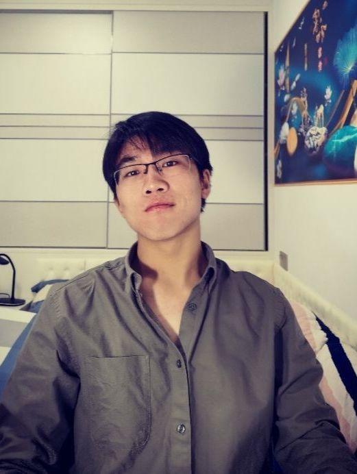
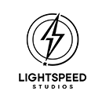

I am a PhD student at Tsinghua University. I study world models, scientific machine learning, and multimodal agents. I am interested in how models predict change over time, from a robot moving an object to the flow of air and water. My recent work also explores memory, reward learning, and .
My 2026 first-author papers include RoboAlign-R1 (NeurIPS) on reward learning for robot video prediction, PnP-Corrector (ICML) on correcting forecasts of coupled systems, and DINO (KDD) on long-term turbulence forecasting.
At the Ant Group AGI Research Center, I study recursive self-improvement (RSI). I previously held research internships at

- Conferences
- NeurIPS, ICML, ICLR, KDD, ICCV, ACL, AAAI, ACM Multimedia, and ECML PKDD.
- Journals
- IEEE TPAMI, IEEE TKDE, IEEE TEVC, Neurocomputing, and Geophysical Research Letters.
I’m open to research collaborations. If you’d like to work together, please email me.
News
Research Experience
Assistant Researcher (Intern), Ant Group
I study recursive self-improvement (RSI) as a path toward artificial general intelligence (AGI).
Research Intern, Tencent IEG
Video world models and physically consistent interactive generation.
Research Intern, Tencent CSIG
Aug. 2025 – May 2026Research on multimodal foundation models, agents, and world models.
Research Intern, Tencent TEG
Efficient attention and reinforcement learning for visual modeling.
Research Collaboration
Research collaborations
Research Collaborator — Video Generation
Jun. 2026 - PresentRecent collaboration: ReCAP, efficient context scheduling for long-horizon video world models.
Research Collaborator — Spatiotemporal Predictive Learning
Dec. 2023 - Jun. 2025Close collaboration on physical spatiotemporal forecasting, including BeamVQ, a metric-guided latent-search framework.
Publications
Service
- Reviewer: ICLR, KDD, NeurIPS, ICCV, AAAI, TKDE, ICML, and ACM MM
- Research Areas: World models, scientific machine learning, and multimodal agents
Selected Awards & Honors
Beyond Research
I enjoy basketball, especially fadeaway jumpers and three-pointers. Always happy to meet for a game!